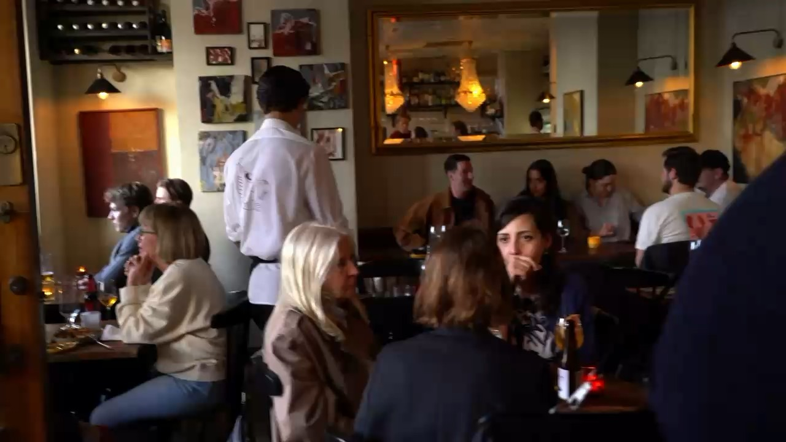
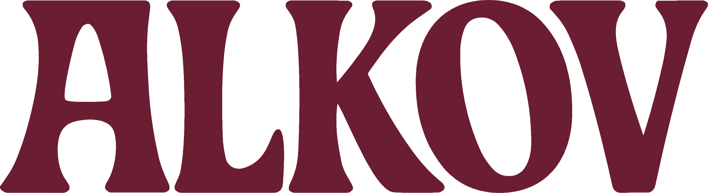

En bistro av två vänner –för vänner
Mat, dryck, god stämning och allt där emellan
“Vi startade Bar Alkov med en enkel vision: att bygga den atmosfär vi alltid sökt. Här serveras välkomponerade rätter som ett komplement till drycken. Noga utvalda viner i vår smak och ett varmt hej i dörren.”